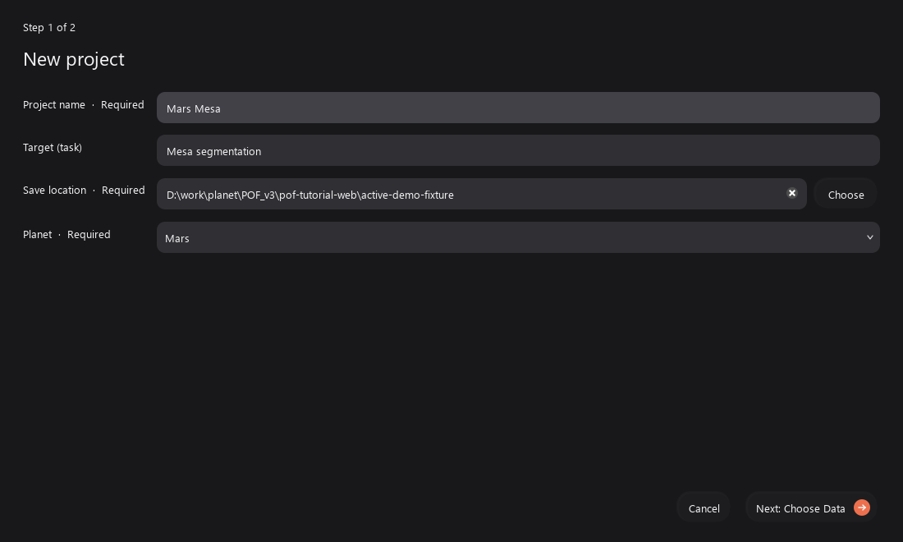
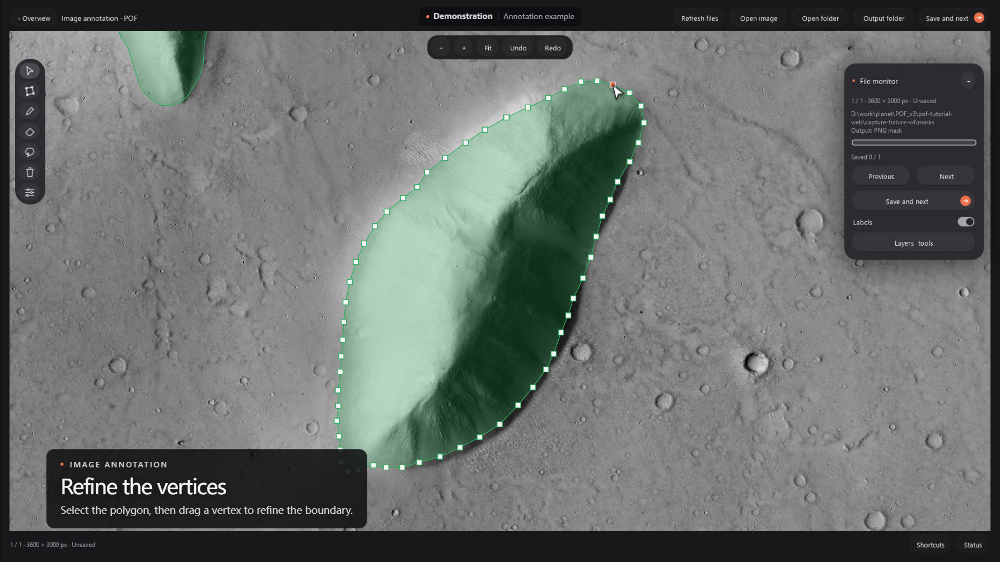
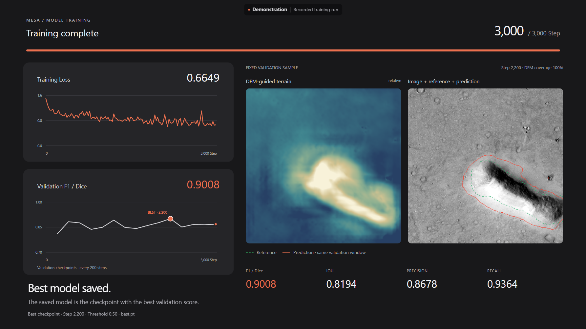
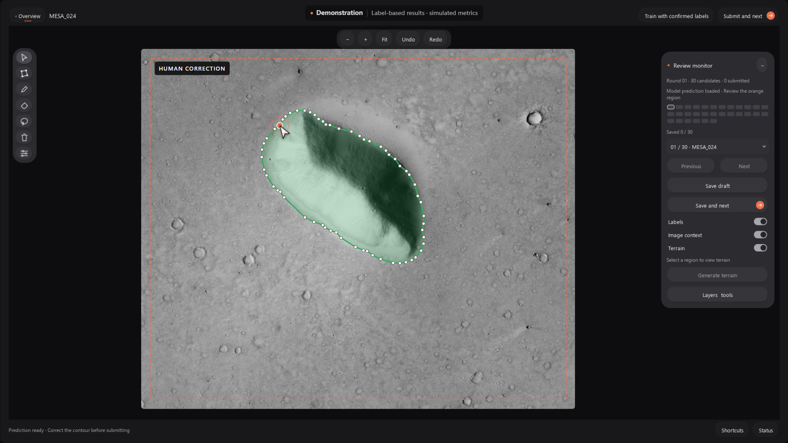
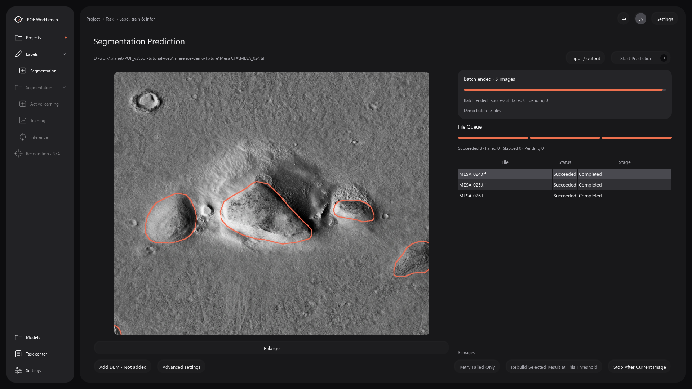

南方科技大学行星与人工智能实验室

POF Workbench 操作指南
POF Workbench 由南方科技大学行星与人工智能实验室开发，将影像标注、模型训练、主动学习和批量推理整合在同一工作台中。用户可以直接制作或修改标签，也可以利用已有标注训练分割模型，再通过主动学习逐轮审核和改进，最后批量处理新的影像。
1. 项目与数据
项目用于归档研究工作；一个项目可以包含多个识别任务。每个任务分别保存影像来源、标签、模型与主动学习记录。
- 选择 New project，填写项目名、保存位置、识别目标和行星。已有项目可用 Switch project 打开。
- 进入具体任务。仅切换项目不会自动选择任务；在任务列表中点击 Enter task。
- 选择工作方式：Active learning、Training 或 Inference。添加所需数据后运行 Check data。
训练影像与标签按同名文件配对，尺寸必须一致。未匹配项会列入检查明细；有效配对可继续使用。标签归一化会生成独立副本，不修改原标签。

2. 独立标注与标签修改
- 从入口点击 Start annotation，选择 Open image 或 Open folder。支持 TIFF 和常见图片格式。
- 通过 Output folder 设置标签目录。有同名 PNG mask 或 SHP 时可载入继续修改。
- 选择绘制工具，在目标边界完成标注。使用 Ctrl+S 保存，或点击 Save and next 保存并前往下一张。
保存格式在设置中选择，默认为 PNG mask；也可输出 SHP。同名 mask 与 SHP 同时存在时，优先使用当前输出格式。SHP 需要原图具备有效的空间参考；PNG mask 与原图保持相同像素尺寸。
工具操作
- Select：选择和修改已有多边形，拖动顶点调整边界；选中后可删除。
- Polygon：逐点绘制，双击闭合。切换到擦除模式可去除圈定区域。
- Brush / Eraser：按住拖动涂画或擦除。左侧竖向滑块、加减键和数值输入框均可调整大小。
- Lasso：按住鼠标沿边界自由圈选，支持添加和擦除。
- Labels：仅切换标注显示，不删除标签。Undo / Redo 用于撤销或恢复编辑。
文件监看显示当前序号、保存状态和文件进度。悬停工具可查看快捷键；快捷键窗口可查询及修改绑定。
常用快捷键
- 绘制工具：V 选择，P 目标多边形，B 多边形擦除，R 画笔，E 橡皮，L 套索，Shift+L 套索擦除。
- 编辑与保存：Enter 闭合多边形，Esc 取消当前绘制，Delete 删除选中标注，Ctrl+Z 撤销，Ctrl+Shift+Z 或 Ctrl+Y 重做，Ctrl+S 保存。
- 视图：空格＋拖动 平移，滚轮缩放，F 适应画布，1 原始比例，H 显示或隐藏全部标注。- / = 减小或增大笔触。
- 切图：独立标注用 A / D；主动学习审核用 [ / ]。这些是切换操作，保存请使用 Ctrl+S 或 Save and next。
按 F1 打开快捷键设置，可修改绑定并保存，两种标注页面共用。悬停按钮可查看当前绑定。输入框获得焦点时，按键优先用于文字或数值编辑；需要使用工具快捷键时先点击画布。

3. 模型训练
- 在任务的数据页选择原始影像和标签目录。点击 Check data，确认有效配对后进入 Training。
- 选择初始化模型，设置训练步数。批次大小、输入尺寸和设备等参数在高级设置中调整。没有任务模型时可用内置 POFBase 初始化。
- 若有 DEM，使用 Add DEM 指定；没有 DEM 可留空。确认设备和参数后点击 Start training。
- 观察 Loss、验证 Dice/F1 和固定样例。训练结束后检查最佳模型与结果详情，再用于推理或主动学习。
Loss 反映训练误差；验证 Dice/F1、IoU、Precision 与 Recall 用于评估分割表现。数值应结合固定样例一起判断。最佳模型按验证结果选取，可能不是最后一步。
需要中断时点击 Safe stop 并等待停止完成。模型已保存但训练后测试未完成时，可通过补做测试完成报告，不必重新训练。
主要参数怎么设置
- Steps：优化器更新次数，不是遍历数据的轮数。常规训练界面初始为 3,000 Step，可先沿用，结合验证曲线判断是否继续；只增加步数不一定改善结果。
- Batch：每次更新同时送入的样本数，初始为 8。显存不足时依次尝试 4、2、1；降低 Batch 主要用于适应显存，不代表模型一定更差。
- Image size：网络输入边长，初始为 384 px。它与原图中的采样视野不是同一个概念；原图窗口可缩放后送入网络。先保持默认，改变输入大小会增加计算量和显存需求。
- Device：通常选 auto；有已配置的兼容 NVIDIA 环境时可选 cuda，排查数据问题时可用 cpu。CPU 训练可能明显更慢。
- Initialization / Weights：从头建立任务模型时用 POFBase；继续学习时用已有完整模型。导入权重后确认模型类型，不要把其他架构的权重与当前架构混用。
学习率和验证间隔等设置由训练配置控制，不必为第一次训练手动修改。验证过于频繁会增加总耗时。若需调整配置文件，建议复制原配置并保留记录，一次只改变少量设置。
怎样判断训练是否有效
Loss 下降说明训练误差在减小，但不能单独证明泛化更好。结合验证 Dice/F1、IoU 和固定样例看边界是否改善；Precision 偏低常对应误检较多，Recall 偏低常对应漏检较多。训练 Loss 持续下降而验证结果变差时，应优先检查过拟合与数据划分，而不是继续增加步数。

4. 主动学习
主动学习将人工审核集中在模型推荐的区域，再用已确认标注更新模型。它需要一个可访问的待标注影像池。
- 在任务数据中添加待标注影像目录，进入 Active learning。起始模型可选择已有模型，或使用自动选择的任务模型。
- 已有模型时，先推荐区域、再审核修正；使用 POFBase 时，先完成首轮人工标注，再训练初始任务模型。
- 进入审核画布。橙色虚线表示本次审核范围；可调整范围，并检查框内所有目标。可通过 Terrain 查看可用地形辅助。
- 修正模型建议，点击 Submit and next。不必标完全部区域：点击 Train with completed annotations 即可使用已完成部分训练。
- 训练后返回概览，检查本轮模型、轮次指标与样例，再开始下一轮推荐。
提交审核时，框内未标出的部分作为背景，框外仍为未知区域。未审核区域不会自动当作背景加入训练。轮次效果应在相同验证条件下比较。
轮次参数与推荐预算
- Initial steps / Round steps：分别控制初始模型训练与后续每轮更新，界面初始均为 1,000 Step。已有模型时先审核少量推荐区域，再根据验证变化决定后续训练量。
- Regions per round：每轮希望推荐的区域数，初始为 30。可按本次能够完成的审核工作量减少；推荐 30 个不意味着必须全标完才能训练。
- Candidate limit / Max source images / Max model inputs：限制候选数、访问影像数和实际网络输入量。它们控制推荐计算规模，不是最终标签数量。数据很多时先保持预算有界；候选不足时再结合状态记录调整。
- Recommendation time budget：推荐阶段允许使用的时间，初始为 180 秒。预算太小可能使候选数量不足；增加预算会延长等待。
- Window size：有投影影像可按米设置，普通影像按像素设置。优先保证审核范围能包含完整目标及必要上下文；很大的地貌不宜只截取一小段边缘。
- Context margin：用于查看目标周围的上下文，初始为 25%。显示更多背景有助于判断边界，但不会自动把框外区域当作已审核标签。
MarsScope 是可选的语义辅助资源，用于辅助寻找候选地貌；没有配置它也可按可用的基础流程准备和审核区域。模型建议始终需要人工核对，尤其要检查漏掉的目标与错误背景。

5. 批量推理
- 进入 Inference，在 Input / output 中确认完整分割模型、输入目录与输出目录。
- 按需添加 DEM。设置输出方式：每幅影像单独保存，或按 mask、Shapefile 等格式集中保存。
- 扫描影像，核对文件队列，点击 Start prediction。
- 等待处理完成。选中结果预览并放大检查边界；需要修正时，可在标注页打开原图和同名标签。
推理使用模型记录的尺度窗口。目标尺寸筛选用于过滤结果，不改变模型训练。PNG mask 便于后续编辑；有空间参考的矢量结果可在 GIS 中检查。
失败原因在文件旁及任务记录中查看。确认路径、空间和模型可用后，可使用 Retry failed only；阈值调整后可对支持的已有结果重新生成输出。
阈值、窗口与输出选项
- Threshold：将前景概率转为目标区域的阈值，选中模型时通常载入其保存的阈值。降低阈值可能找回漏检，也可能增加误检；提高阈值会更严格，也可能丢失弱目标。先用模型推荐值，在少量代表影像上检查后再批量处理。
- Target size：按面积或尺寸排除过小、过大的结果。留空表示不设该方向的限制；使用物理单位前需确认影像空间参考有效。
- Model windows：默认沿用模型记录的尺度与权重。不要把目标尺寸筛选当成窗口设置；过滤结果无法补回模型没看到的整体结构。
- Continuous / cross-image inference：用于满足同一空间参考等条件的相邻影像。仅仅放在同一文件夹内不代表适合启用；独立影像先用普通批量推理。
- Output layout：一幅一个文件夹便于逐图整理；按格式集中输出便于统一打开 mask 或 Shapefile。开始前确认输出目录及剩余空间。
进度分为当前文件处理阶段与整个队列。多尺度预测、融合及导出均可能耗时；剩余时间会随实际速度重新估计。选择完成当前影像后停止时，当前文件仍会继续收尾。

6. 模型、DEM 与运行设置
- Models：导入完整模型，查看验证条件及来源，再用于标注、训练或推理。同一任务的默认模型会优先采用任务内选定的最佳模型；也可手动指定起始模型。
- DEM：可选输入。路径为空或当前窗口无法有效对齐时，支持的 POF 模型回退到单目相对地形。相对地形不是测量高程，不能当作真实 DEM。
- Settings：切换语言、亮暗主题及跟随系统。GPU 运行库和 MarsScope 可按需下载；配置完成后检查状态是否显示已配置。
- Task center：查看运行阶段、错误与完整记录。切换页面不等于停止任务。
7. 常见故障处理
- 不能开始主动学习：检查是否已进入任务，并配置待标注影像池；只有训练数据时应使用训练入口。
- 标签没有载入：检查标签与原图是否同名、像素尺寸是否一致，并确认当前输出格式优先级。
- GPU 不可用或显存不足：检查运行库配置，减小 Batch；必要时用 CPU 验证数据流程。
- 文件找不到或输出失败：检查网络目录连接和磁盘剩余空间。Windows 路径较深时，将项目移到较短的本地路径。
- 训练指标异常：先查看标签前景和固定验证样例，确认没有空标签、错配或类别编码错误。
向开发者反馈时，提供操作步骤、任务记录及完整报错。原始影像、标签和模型请自行备份；存储清理仅对确认可重建的缓存执行。